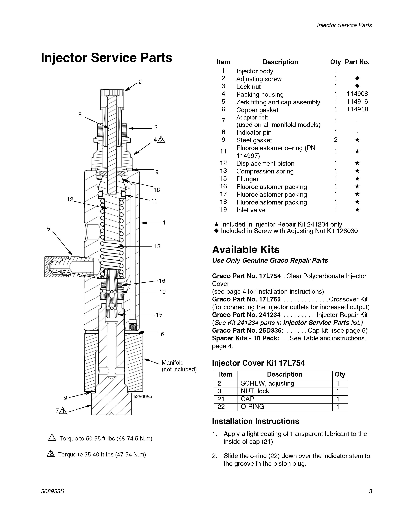

注油器 · OIL EJECTOR
Масленка
Описание
Масленка на системе централизованной смазки - цилиндрическая и установлена на передней и задней осях транспортного средства. Транспортное средство имеет три узла клапана масленки.
Управление
Функция масленки состоит в том, чтобы доставлять смазку из картриджа смазки и узла насоса в каждую точку смазки. Каждый рабочий цикл масленки делится на четыре шага.
Шаг 1
Поршень масленки находится в нормальном положении или положении покоя. В камере слива масла заполняется циркулирующей смазкой. Золотник открывает проход к масленку под давлением смазки.
Шаг 2
Когда золотник открывает проход, смазка попадает в измерительную камеру над поршнем масленки, так что смазка течет из камеры слива масла через выпускное отверстие к шлангу, ведущему к смазочному компоненту.
Шаг 3
Когда масленка завершает ход, то золотник проталкивается через проход, чтобы предотвратить попадание смазки в проход и измерительную камеру. Поршень масленки и золотник остаются в этом положении до тех пор, пока давление смазки в линии питания не будет выпущено (выпущено в насосе).
Шаг 4
После выброса пружина масленки удлиняется, заставляя золотник двигаться. Это приводит к тому, что проход и камера слива масла соединяются через порт клапана. Продолжающееся удлинение пружины заставляет пружину двигаться вверх, заставляя смазку в измерительной камере заправлять масляную разгрузочную камеру через проход и порт клапана.
Уход и техническое обслуживание
Регулярное техническое обслуживание масленки должно включать следующие шаги:
1. Очистить компоненты системы.
2. Проверить смазочные и смазочные линии на наличие пыли, повреждений, износа или утечки. При необходимости отремонтировать или замените.
3. Убедиться, что крепежные элементы надежно закреплены.
4. Убедиться, что подача масла каждого масляного фильтра находится в указанном диапазоне. Если подача масла не соответствует требованиям, необходимо перенаправить подачу масла в масляный фильтр. Шаги регулировки следующие (как показано на рисунке 2):
a. Снять защитную крышку с масляным фильтром и ослабить контргайку (3).
b. Увеличить поток смазки, повернув регулировочный винт (2) (против часовой стрелки). Уменьшить поток смазки, повернув регулировочный винт (2) (по часовой стрелке).
c. Затянуть контргайку и установить защитную крышку.
Регулятор расхода смазкиОписаниеЧисло оборотовРасход смазкиIn.3ccРегулировка максимума00.0801.31Поворот по часовой стрелке на угол 306°10.0711.16Поворот по часовой стрелке на угол 306°20.0621.02Поворот по часовой стрелке на угол 306°30.0530.87Поворот по часовой стрелке на угол 306°40.0440.72Поворот по часовой стрелке на угол 306°50.0350.57Поворот по часовой стрелке на угол 306°60.0260.43Поворот по часовой стрелке на угол 306°70.0170.28Регулировка минимума80.0080.13Снятие
1. Остановить карьерный самосвал в безопасном месте, кроме использования фрикционной системы торможения, еще нужно подложить клинья под колеса.
2. Отпустить остаточное давление во всей централизованной системе смазки.
3. Снять впускной и выпускной шланги с блока масляного клапана и отметить их везде для установки.
4. Ослабить крепежные болты блока масляного клапана и снимите блок масляного клапана.
Разборка
Процедура удаления одного масляного фильтра из блока масляного клапана и его ремонта следующая:
1. Поместить блок масляного клапана в чистую рабочую зону.
2. Проверьте все уплотнительные элементы на наличие мест утечек или признаков повреждений. Отремонтируйте или замените по мере надобности. При необходимости замените все уплотнительные элементы.
Сборка
Один масляный фильтр можно повторно собрать на блоке масляного клапана следующим образом:
1. Поместить детали для сборки в чистую рабочую зону.
2. Собрать внутренние детали, как показано на рисунке 2.
3. Удалите воздух из трубопроводы и лубрикатора.
4. Отрегулируйте подачу лубрикатора по мере надобности.
Вспомогательная система – маслянка
100-0020
Вспомогательная система – маслянка
100-0020
2
3
Вспомогательная система – маслянка
100-0020
4
Поршень
Конец клапана
Канал
Измерительная камера
Канал
Измерительная камера
Снабжение смазки
Снабжение смазки
Выпускная камера
Выпускная камера
Секция III
Секция II
Секция I
Рис. 1 Рабочий процесс маслянки
Поршень
Выпускная камера
Поршень
Снабжение смазки
Золотник
Снабжение смазки
Канал
Золотник
Поршень
Золотник
Золотник
Канал
Измерительная камера
Измерительная камера
Секция IV
Выход
Рис.2 Конструкция маслянки
1Корпус лубрикатора9Стальная прокладка2Регулировочный болт11О-образное кольцо3Контргайка12Перемещение поршня4Сборка корпуса13Пружина сжатия5Сопло15Поршень 6Медная прокладка 16Уплотнения 7Болт соединителя18Уплотнения8Стрелка указателя19Входной клапан
Иллюстрации
